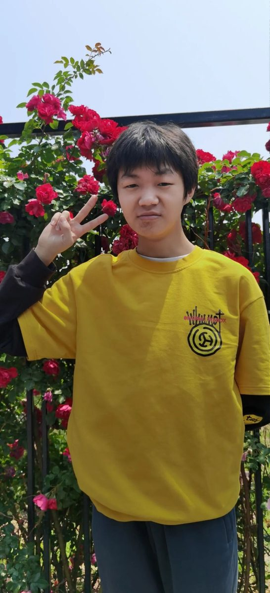
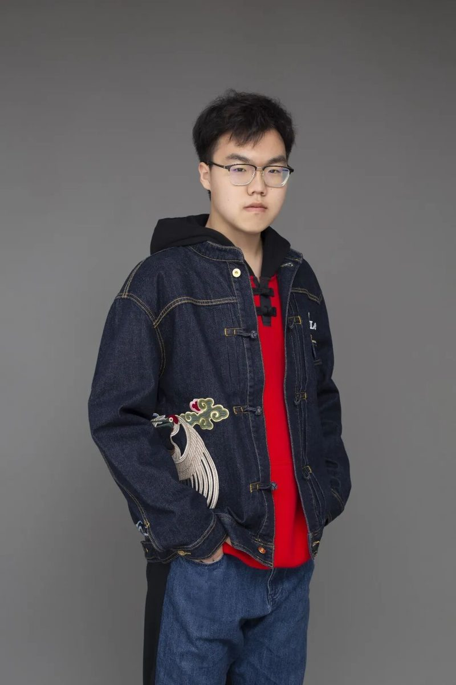
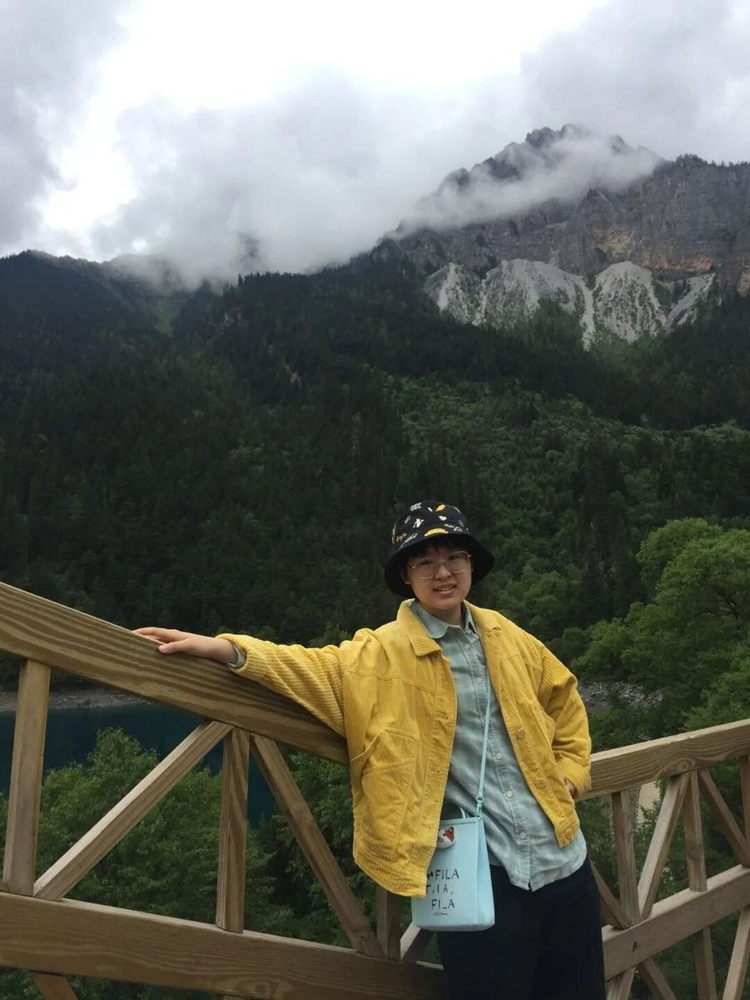
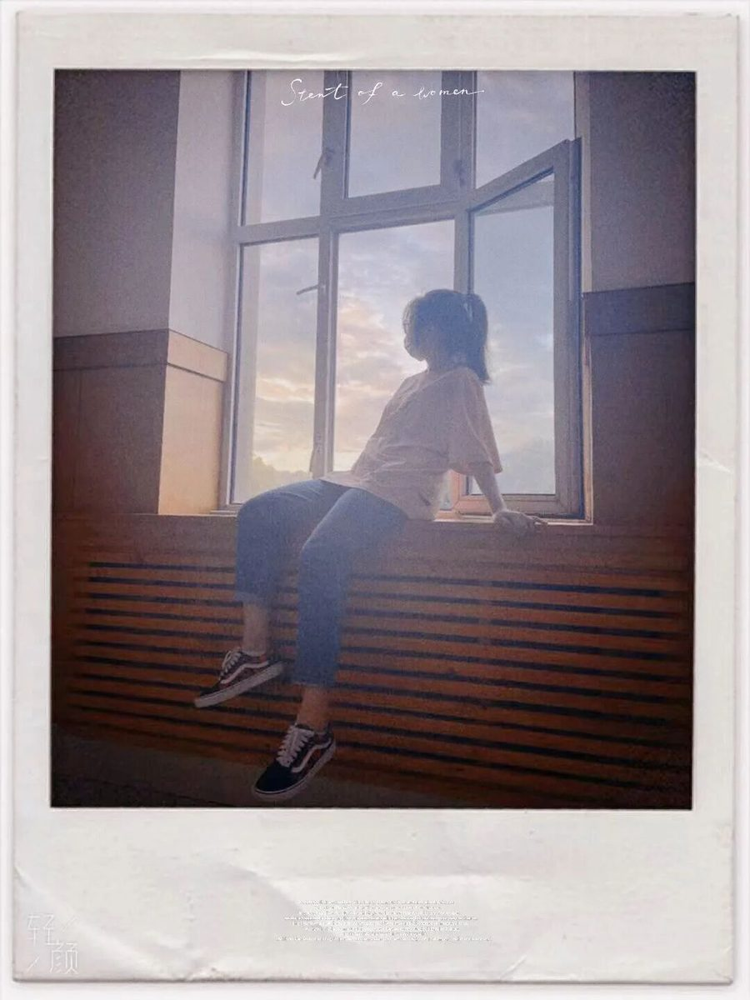
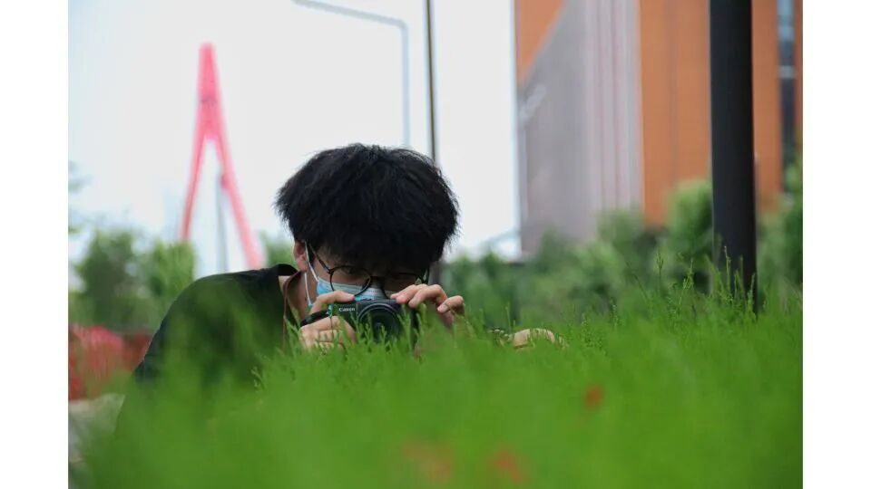

【行者无疆·流眄苏杭】行者篇


行
无
者
疆
第
十
一
期


人生到处知何似，应似飞鸿踏雪泥。
泥上偶然留指爪，鸿飞那复计东西。


行者无疆·流眄苏杭
文溯齐鲁
知遇中原
致旅吴越
拾遗皖徽
韶忆长安
源洄渝州
言念潇湘
聆谂丝韵
寓绻淮扬
赓续前行
流眄苏杭
知者行之始，行者知止成
行者们携时代新知，探网络幽秘
正是江南好风景
行者们踏上新的征程
第十一期行者无疆来了！

指导教师
邹靓靓
了解社会需求，锻炼自身本领。
明确发展方向，实现人生价值。
队长
朱华玮
我虽行过死荫的幽谷
也不怕遭害
副队长
崔雨琪
庸常之中
微芒不朽
外联组
方谭
欢迎大家来杭州玩～
殷心怡
愿我能带上最单薄的行李
和最丰厚的自己在世间流浪
吕杨
生活不止眼前的苟且
还有诗和远方
采访组

杨耀杰
不是人间雾
何请举世寻
温兆琪
与欢乐同行
与自如常伴
调研组

温英琪
人生如果错了方向
停止就是进步

李骁
Take a shot chase the sun
find the beautiful
文字组

杨婧葳
喜欢的日子就是好日子
徐晓彤
生活明朗，万物可爱
人间值得，未来可期
宣传组
周奕彤
去做不被定义的风
一览江山河海

王文通
行至山巅 行至谷底
二者皆让我受益良多
美工组
董一
对生命的恒常有祝福之念
对生命的变化有宽容之心
后勤组
陈洋
生活越接近平淡
内心越接近绚烂
沟通的桥梁连接世界各地
一根网线牵起此岸彼岸
复杂的代码删繁就简
互联网世界欣欣向荣
孤举者难起，众行者易趋
志同道合之人比肩
与时俱进，探秘寻踪

来源 | 行者无疆实践团
文字 | 行者无疆实践团
排版 | 周奕彤
审核 | 朱华玮 崔雨琪
行者无疆实践团
QQ：2758025831

长按二维码
与行者们一路流眄苏杭！